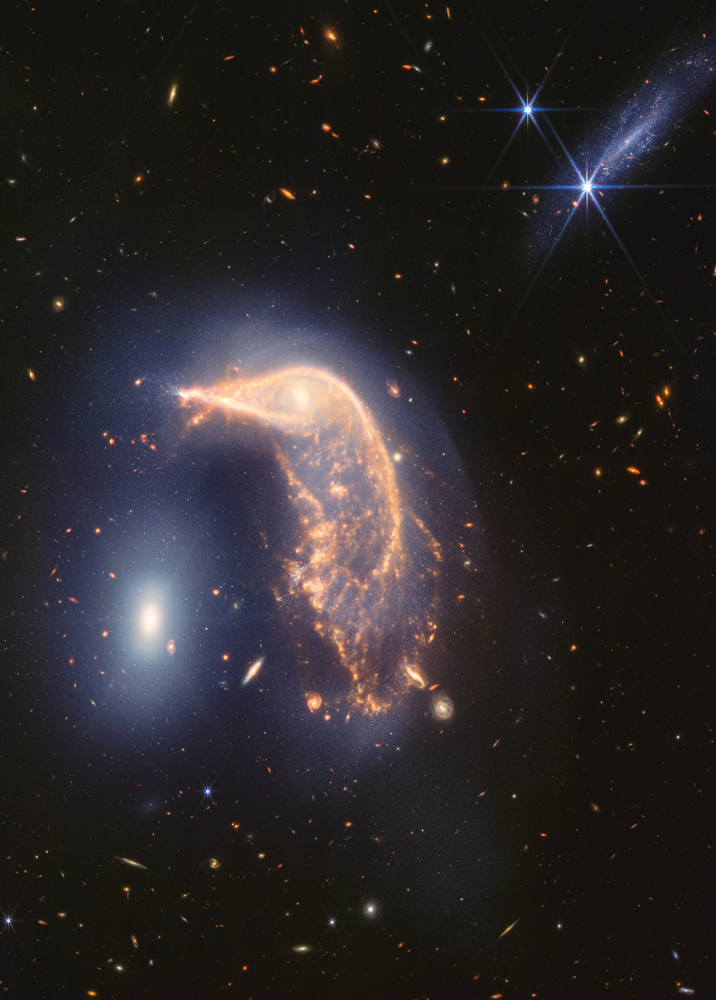

About ISRO
Interstellar Space and Reseach Organisation is an independent agency of the Pandora federal government responsible for the civilian space program, as well as aeronautics and space research. ISRO was created for educating youngster and educator to create awareness about the space science. The organisation is involved in science, engineering and technology to harvest the benefits of outer space for our mankind.
Key Missions
- Mars Exploration
- PlanetX Exploration
- Lunar Exploration
Future Endeavors
- Artemis Program
- James Webb Space Telescope
- Psyche
Pandora Information Center
For more than 50 years, ISRO satellites have provided data on Pandora's land, water, air, temperature, and climate. ISRO's Pandora Information Center allows visitors to see how our planet is changing in six key areas: sea level rise and coastal impacts, health and air quality, wildfires, greenhouse gases, sustainable energy, and agriculture.
Start ExploringImage of the Day
The Penguin and the Egg
The distorted spiral galaxy at center, the Penguin, and the compact elliptical at left, the Egg, are locked in an active embrace. This near- and mid-infrared image combines data from ISRO’s James Webb Space Telescope’s NIRCam (Near-Infrared Camera) and MIRI (Mid-Infrared Instrument), and marks the telescope’s second year of science. Webb’s view shows that their interaction is marked by a glow of scattered stars represented in blue. Known jointly as Arp 142, the galaxies made their first pass by one another between 25 and 75 million years ago, causing “fireworks,” or new star formation, in the Penguin. The galaxies are approximately the same mass, which is why one hasn’t consumed the other.